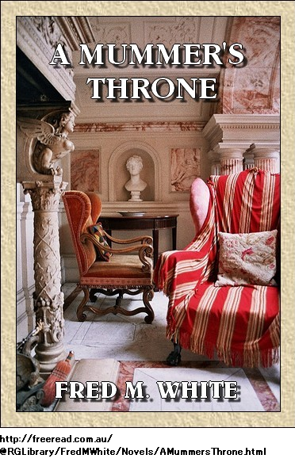

第一章 王の花嫁
アストリア大使主催の園遊会が開かれ、ほとんどの招待客が居残っていた。大多数の目的は若きモンテナナ国王に
常に
だが賢い行政官が、なんとか国家をうまく統制し、国王の専用財布に年二十五万ポンド程、補充していた。国王の自慢は陸軍が二万人、海軍が
あとは美男、ひげを剃り、少年のようで、見かけはオクスフォード出かケンブリッジ出の弁護士といった
フリッツ王の訪英目的が知れた途端、多くの令嬢が心躍らせ、ほとんどの欧州大使が少し動揺した。だって結局の所、モンテナナ国とは利害関係があるし、国際会議で幾度も争いの元になったからだ。
慣例に従い、国王は一人で来ていない。監視役の伯爵、ラッツィン大将がそばにいた。歴史を習ったものなら誰も知っているのがこの著名な武人、過去にバルカン半島で重要任務を行った。
ラッツィン大将はいま貴人と立ち話中で、話題はモンテナナ国とフリッツ王のことだった。
ラッツィン大将が意味深に言った。
「閣下、重大責任ですな。確かに魅力的な若者ですが、
貴人がささやいた。
「大将、国王は大変なやんちゃだとか、少なくともそう聞きましたが」
「ええ。英国の教育のせいですな。もちろんハロー校ですよ。そこで、いとこのフロリゼル公と一緒でした。たぶん
貴人が薄笑いして言った。
「立憲君主はそうでなくちゃ。たぶん甘んじてすべてを賢い総理に
大将が小さく咳払いすると、貴人がすぐ話題を変えたわけは
いま老軍人の顔が
芝生の上に直立不動で立ち、顔が新緑の木陰で半分隠れている。貴人の目には老大将の顔が真っ青になっているように見えた。不安げに
「大将、ご気分が悪いのでは？」
「閣下、古傷ですな。サースプルート地方で受けた頭傷が治りません。脳圧が高いのですよ。医者は脳圧迫と言っておりますが、願わくは……」
老大将が何を願っていたか分らない。というのも突然芝生に倒れ、
招待客が身震い動揺し、たちまち大勢が意識不明の大将を取り囲んだ。灰色の服や正装が多い中で、派手なワンピースを着た令夫人が群衆の端で顔を
「なんて恐ろしい、とても恐ろしいわ」
そばにいたフリッツ王がつぶやいた。
「なんて運がいいんだ」
令夫人が振り向き、非難するように灰色の瞳を向けて、尋ねた。
「
モンテナナ国フリッツ王が耳の付け根まで真っ赤になった。恐らく王室記者がいなくて良かった。思わず口ごもった。
「侯、侯爵夫人、誤、誤解です。正直に言いますと、ラッツィン大将は大好きですがやはり、古い頑固者です。まあ、学生時代は離れていて良かったですけど。いえ、大将はたいしたことはありません。時々奇病に襲われて、しばらく
貴人達が離れると、ラッツィン大将は両腕を抱えられ、大使館の中によろよろ歩いて行った。老大将の顔は太陽に照らされて、ぞっとするほど真っ青。
だが国王は不安な表情を全く見せず、実際近くにいる人が見たら、喜んでいると言いかねない。そのとき大使秘書がフリッツ王の所へやってきて、ささやいた。
「陛下、大変な事態でございます。いま医師が大将を診察しておられます。何かご命令がございましたら」
モンテナナ国王が即座に言った。
「帰宅させて、ベッドに寝かせろ。必要なのは看護人と、氷枕だ。二、三日寝かせれば、元通り元気になる。以上だ」
秘書が下がると、国王は小さなテーブルへ行き、さも日常茶飯事かのよう。少年のように
小さなテーブルに座っていたのが友人・フロリゼル公、コーヒーを飲みエジプト
共和主義者やその
「フロリゼル、お笑いだ。老いぼれのラッツィンが気絶しおって。あれは古傷のせいだな」
フロリゼル公がつぶやいた。
「陛下、重大事です」
「陛下なんてよせ。誰も聞いてないのに、そんな敬称を言って何になる。事の意味が分らんか」
フロリゼル公が笑いすらせずに、言った。
「おそらく外交が止まります。例のオーステンバーグ王女との交渉……」
「二度とその名前を言ったら、ぶちのめすぞ。ラッツィンが何と言おうが構わん。あんな辺境地が何の足しになるか、しかも妻となる女はと言えば、体重八十キロ、肌色は腐ったオレンジ色とくる。いやだ、俺の結婚は俺の好きにする。自分で選べなきゃ国王なんて何のいいことがあるか。さて老体を見舞ってから、二人で楽しもう。うんざりだ、片足を引いて
フロリゼル公が不安げに言った。
「せいてはいけません。老大将が寝込んでいる……」
「フロリゼル、好機だよ。あの老体は二、三日何も出来ないし、これ以上いい口実はない、連中の筋立てを中止できる。しかも俺達の人気が上がるぞ。人生の楽しみをあきらめた姿を想像してみろ、モンテナナ国を操る老人の病室で座っているなんて。大々的に載る新聞記事を考えてみろ、ずっとだぞ、フロリゼル、都市の女王、ロンドンの楽しみをなめ尽くすぞ、突っ込むぞ」
フロリゼル公は若いなり世代なりに賢かったが、
フロリゼル公が心配して言った。
「急ぎすぎていませんか」
「ほんのちょっとだ、ハハハ、いやたぶんまっしぐらかな。さあ行こう、君も口実を設けろ。あとは神のみぞ知るだ」
第二章 役者
医師の診断によればラッツィン大将の症状は全く心配ない。老軍人は脳圧迫に苦しんでいるが、単に時間の問題だ。一日か二日絶対安静にしてその間、国家事案で心配させてはいけない
これらすべてを若き国王は達観して聞いていた。さらに以前も、老大将の同様な症状を何回も見ている。あの老
陛下は心安らか、期待に胸膨らませて個室へ戻り夕食についた。衣服はごく普通の紳士と言ったところ。気遣いして随員の任務を解き、各自好きにさせ、フロリゼル公と二人だけで夕食をとった。付き人ですら暇を与え、その口実というのが国家行事で夜も遅くなったから早く休みたい。全く立派な国王である。
さて、今や部屋の扉を閉め、二人で語り合い、給仕するのはホテル従業員だから、モンテナナ
おもむろに食事してワインを飲んだ。上等なシャンパンで程なく暖まり、眼前の世界がバラ色に見えた。想像力は若者の特権じゃないけれども、二人が思いもしないすごい事が早晩、無邪気な冒険の末に得られるかもしれない。
夜がだんだん更けてきた。大都市の明かりが怪しく眼下にきらめく様は
フロリゼル公が尋ねた。
「決心しましたか」
「ああ充分考えた。誰にも俺が分からないだろう。いの一番にオデロン劇場へ行ってニタ・ラインハードを見よう。ニタのことは全部新聞で読んだ。若い女優が全都市を熱狂させた。道化玉座という劇を演じている。噂では完璧に女王そっくりを演じるとか」
「僕が読んだのは劇の原作本です。純真で美しい田舎娘が玉座へ登る話ですね。面白い話で、少女の能力が開花します。まあ、強毒になりかねませんが」
国王がやや後ろめたそうに言った。
「かもな。神意は俺の自由だから、俺の好きにする。でも楽しみはあとにして、まずカフェに行こう。寝室に鍵をかけ、窓から戻れるように給仕に言いつける。ハロー校を卒業して初めて、フロリゼル、俺たち楽しめるぞ。町が呼んでいるのが聞こえないか。妖婦の声が聞こえないか。俺は聞こえる」
まあフロリゼル公もそんな気がした。やがて二人は歩いてオデロン劇場へ行った。地味な白黒夜会服だったので、気づかれなかった。すぐ最前列の升席に座ると、ちょうど幕が上がり、劇場は各国語が飛び交い、毎晩満席だ。
劇は夢のように突飛で、所々明らかに説得力に欠けた。というのも現実ではまれだし、農民出身ながら美人で想像豊かな娘が自分の道を見つけ、遂に玉座の階段に足を乗せる話だもの。
一人の少女、いや、ただの子供が
ニタは最初の登場場面から最高の魅力を発揮し、ぼう然と震える姿が足元の明かりに照らされ、
第一幕は質素な田舎家の場面、空想好きな子供が年齢や身分不相応の教育を受け、どうしても行きたい世界が、実家の庭園に咲くタチアオイやサクラソウの向こうにあった。
それから次第に物語は進行し、遂に百に一つの好機がやってきて、玉座が少女のものになった。ここを
果たしてやり通せるか。のしかかる名誉に値するか。任務は王宮に留まることか、それとも神の思し召しで困窮国家を救うことか。劇場全体が言葉を待っている。沈黙が張りつめ、痛々しい。
モンテナナ国王は升席の肘掛けをぐっと握りしめ、息を殺し、熱演を見つめた。こんなに魅力的で美しい少女は見たことがない。金髪、背が高く、まさに女王のよう、しかも全く化粧気がない。いよいよ堂々として、考え方も次第に大きくなり、運命に従い、神の命令と思える行いをする。
そのときモンテナナ国フリッツ王の目には眼前の女性が、役を演じる女優でなく、本物の女王が責任を一身に背負っているように見えた。
第三幕が下りると、劇場全体が拍手喝采で震えた。劇場はダイヤモンドや真珠がきらめき、漂う香水の匂いが若い国王の血管に浸透し、酔ってしまった。
連れのフロリゼル公に向かって熱く語った。
「見逃さずに良かったよ。こんなの今まで見たことがあるか。この種の劇を見ないで、ただラッツィン老体を喜ばせていただけとは。ところであれこそ女王じゃないか。王宮でいろいろ経験してきたが、実物を見たからには知るべきだ。なんと違うことか、夫を求めて王宮をふらつく着飾った青い目の人形と全然違う。フロリゼル、あの女性を知らなくては」
フロリゼル公が慎重にそっと言った。
「知らない方がいいですよ。僕ならやらない。舞台では若くて純真に見えるが、化粧を落とせば四十歳、おそらく旦那がいて表に出せない子だくさんですよ」
だがモンテナナ国王は一笑に付した。
「せいぜい二十歳ぐらいだ。中年女はあんな声を出さない。それに目を見ろ。そうだ、もし俺の女王なら、もう革命党に悩まない。妻を派遣して奴らと親交を結べば、奴らはきっと献身的で忠実な臣民になる。何とか真意を探れないか。座長に俺達の身元を明かせば、恐らく
見よ、ついに玉座の女王が、威風堂々と意欲に満ちて国民に善政を行っている。そこを敵と陰謀が取り囲み、完璧な女王が運命と闘うのは必然の流れだ。だが今は幻滅している。夫がただの堕落した弱い男だからだ。屈辱され、見捨てられたことを知った。そして山場が来る仕掛けがあり、始めから額に押された
モンテナナ国のフリッツ国王はうっとり座って、舞台に集中した。我が王国の小劇を見ているようだ。そして舞台総出演になった。
革命衆がたいまつを持って集合すると、たいまつの一つが両翼の薄い垂れ幕にうっかり接触した。たちまち炎が移り、観客が気づくまもなく舞台が燃え上がった。すべてが一瞬だった。役者らが
その後は国王にとって夢のようだった。足元の照明を飛び越えて舞台へかけ上がった。両腕にあこがれの体を抱えた。女の鼓動が我が身に響いた気がする。長い金髪がほのかに匂ってくる。強力な忘れられぬ青春の一コマ、中年にはあり得ない。今や劇中の人になりきり、主役を演じている。
舞台に突っ立ち、両腕に細身の白人を抱えたまま、観客に向かい、席に座るように呼びかけた。というのも今や危険は去り、防火カーテンがすぐに降りてきたからだ。
やがて女が目を開けると、瞳は美しい青色、まさに夏木立に囲まれた湖の深い色だ。神々しい朱が顔中に広がった。唇が動いた。
「何とお礼を申し上げましょう。なんて勇敢で親切でやさしいのでしょう。今晩、観客の中でお見受けしました。国民はこのことを聞いて、誇りに思います」
「じゃあ、私の身元を知っているのですか」
「はい、陛下。モンテナナ国王でいらっしゃいますね」
第三章 リ・ロイ・サミューズ
モンテナナ国の希望の星がひげをそり、しみ一つ無いフランネル服を着て、破滅へと走った。義務として、フロリゼル公はいさめるようなことをしたが、説得力が無いので、国王は笑うばかり。果たして国王は束縛から逃れたか。ラッツィン大将は暗室に幽閉されているのか。しかも季節はさわやかな五月、至る所、かぐわしく新鮮で美しい。
「そのうちひどい騒ぎになります。無茶をしていますよ」
とフロリゼル公が言った。
国王が
「分っている、フロリゼル、これは一生の好機だ。しかも短い。それにあの女は最高にかわいくて素敵で魅力的だし……」
フロリゼル公は早々に退散した。この数日でのろけをしこたま聞いた。でも自分も若いし、ほかにやる事がある。
だから国王がさわやかな五月の朝っぱら、口笛を陽気に吹きながら外出するのは、元気な若い紳士と同じで、内気な乙女が祝日の行進を見たい一心と同じだ。今や王の威厳は
やがて国王とニタ・ラインハードは城壁下の銀川を流れ下り、森の木陰へ行った。そこにはツリガネソウが絨毯のように咲き、青いサクラソウの匂いがかすかに漂っていた。
フリッツ王にとって今や何でも無いのは向こうの不気味な塔で先祖が処刑されたり、別な先祖がこの大都市を包囲して武力で脅したりしたことだ。忘れたのは家系や野心や期待、それに厳格なラッツィン老大将。思いもしないのはそんな些細なことや、王妃候補の嘆きなど。一方見入っていたのが、連れの女優、ニタの底知れぬ深い
知らないし、ついでに関心も無いのは、ある噂が安新聞に載り、新進記者がモンテナナ国王の失踪を公表していることだ。それがどうだっていうの。
どんどん銀川の水面を流れ下り、遂についた所で昼食を取ることにした。とても豪華なごちそうはオベロンとタイタニアが座食し、小妖精がこっそりからかった場面の如し。
食事が済むと二人はまた小舟に戻り、草原の間を進み、キャメロット辺りに到着したように思われた。
これこそ本望、絹のような草に体を横たえ、ニタの声を聞くべし。そして将来の計画を語り始めると、かわいい女優がため息をついた。国王が不安げに
「嫌ですか」
「嫌ですってまさか。でも全くばかげています。おかしいほどばかげていますし、やはりばかげています。陛下は大望や激励をお忘れになられたのではございませんか」
「そんなものはありませんよ」
「どうして？ 当然お持ちでいらっしゃいます。お持ちで無ければ一族で初めてでございましょう。目先の可能性を考えてご覧あそばせ。陛下は若くて勇敢で賢くていらっしゃる。モンテナナ国始まって以来の人気者でいらっしゃる。陛下ご指導の下、お国はいつか偉大になりましょう。私も故国を誇りにしたいものでございます。少しでもお力添えになれたら嬉しゅうございます」
国王がまじめな美顔をちらと見られた。
「モンテナナ国の何を知っていますか」
「わたくし、そこで生まれました。母国でございます。父がラスタに畑を持ち、向かいの山中に住んでいました。陛下と親しくなれた暁には、私の経歴をお話いたします。今はまだでございます」
「いま言いたまえ。いや、こんな風に言うのは私の主義じゃない。そうですか、私と同じ国でしたか。嬉しいですね。そのうち国民はびっくりして喜ぶでしょうね」
ニタが取り澄まし、笑顔で言った。
「国民はまだ知らないのでございますか。純朴な国民ですから私のような人生には少しも同情しないでしょう。いつか陛下がご結婚遊ばされて、お
国王が熱を込めてお尋ねになった。
「なぜですか。安心じゃない？ 私が王位生まれだから楽しみを全部なくすとでも？ 私は絶対結婚しません、もし……」
国王が一瞬慎重になられた。たぶんちょっと言い過ぎたことに気づかれたのだろう。今や春の香りが血中に満ちている。あたりはサクラソウがほのかに匂っている。
国王がきっぱり言われた。
「あんな王女らとは結婚しない。なぜあんな風に欧州で言われねばならないのか。なぜ自分が選ぶ前にロシアやオーストリアやドイツに相談しなければならないのか。それにここだけの話だが、ニタ、王女達は凡人です。私の結婚は私の好きなようにします。ちょうど先祖のボリス王がしたように。ボリス王は羊飼いの娘と結婚し、二人でモンテナナ国を作り上げた。今の王家には健全で健康な血が必要です。衰弱し虚弱になっています。ああ、ニタ、あなたなら素晴らしい女王になれます」
ニタはほとんど聞いていないようだった。だが最後の言葉が琴線に触れ、妄想に火がついた。ほほがかすかに色づき、青い目で遠くを見つめた。なれるか、と自分に問うた。王や女王だって一般人同様ただの人間だ。元々感情や衝動に左右される。古き良き時代、玉座は同族出身、力は正義、剣が最後にものを言った。そんな王がどこにでもいた。
これならニタでもやれる。ニタなら目先のことなど怖くない。あの小さな足で、玉座の階段をしっかり踏める。国民の利益をしっかり守れる。なぜ女王になっちゃいけない？ そんな冒険を考えると熱くなった。
今や鼓動が高鳴ってきた。鼻息も荒くなってきた。しかも、この国王だ。今のモンテナナ国王なら、どんな女性でも幸せになれる。不意に衝動が来て、お辞儀して前に進み、片手でそっと、しかもほとんど愛撫せんばかりに国王の縮れた茶色頭髪に触れた。国王は、じわっとする冷たい指で触られてぞくぞくっとした。にわかに動揺した。
「や、やめてください。とにかく危険です。ニタ、今は最高の友人ですよ」
「ええ、最高の友人でございます」
「よろしい。ここで模範を示すべきじゃないですか。なぜ王宮から王宮を訪ね、穏当な女性を見つけ、一緒に住まなければならない？ とても不快ですし、冷酷な取引みたいです。それに全新聞が書き立て、わめき、鳴き立てるのが、モンテナナ国フリッツ王の恋愛です。写真を撮り記事を書き、未来の女王たるあなたと別れたら、泣いたと報じますね。ええ、泣くでしょうね、笑いものにされて」
ニタが長いまつげで微笑み、尋ねた。
「そんなに悪いことでございますか」
国王が不機嫌に言われた。
「悪い。確かに笑われたくないし、我慢できない。私が誰と結婚しようが、欧州大使に何の支障がある？ 自分の好きに出来ないなら国王に何の益がある？ しかも簡単です。それにいったん教会の儀式に
「恐れながらばかげています、フフフ。あり得ません。陛下の理想の女王は無理筋ですし、存在しません」
「存在します。今ここにいます。ああ、分らない振りをしないで下さい。あなたの目や美しいほほを見れば考えが分ります。もう私は自分を制御できないわがままな少年じゃありません。二十五歳ですし、目の前のすべてが得られます。ほかに何が欲しいのですか。皆には勝手に言わせておきなさい。笑ってはいけません。私のすべてを捧げます。ほかに何がありますか」
「玉、玉座と、王、王冠でしょうか」
国王が熱く言われた。
「ええ、何でも。玉座も王冠も魂も王宮も。神に誓って、あなたは女王になるべく生まれ、最高の美貌、善意、優しさを持ち、幸運・歓喜の国民を統治します。尊敬されるでしょう。モンテナナ国民は素晴らしい審美眼を持っています。なぜ駄目なのですか、ニタ。なぜ笑うのですか、私の本心が分っているのに。ことは単純、簡単です。結婚するまで公表しません。あとは何と言われようが構いません」
ニタは国王を制止すべきだった。いさめるべきだった。それはよく分っていた。だが座って微笑み、濃紺の縁取りをした両眼に、涙を浮かべ、震えていた。片手を握らせ、唇に熱く当てるがままにさせた。
結局ただの女性であり、思いがけず急に幸運が迷い込んだに過ぎない。人生に流され、うまく泳げない。国王のお世辞で微妙にくすぐられたが、この勇敢な若者は足元にひざまずき、自由で奔放な国民を統治しようとしている。
もちろんニタも愛している。それは間違いない。今更こびを学んで、詰めよって
だから女王になれるかもしれない。今まで歓喜する大勢の観客に毎晩応えていなかったか？ 今や想像で自分の行く末が見えてきて、道中に横たわるあらゆる困難や危険をくぐり抜け、ついに玉座にしっかり立ち、思わず知らず国民を愛せざるを得ない。
「そんなことをおっしゃってはいけません」
「ニタ、私はやりますよ。今までこんなに真剣になったことはありません。なぜ駄目なの。あなたはいい人だし、美しい。神の最高傑作です。誓って、愛無き結婚はしません。むしろ退位して、
国王が熱くお願いするので、すべての言葉がニタの心にぐっときた。道理に反し、ばかげているのがよく分っていたのは、たぶん当たり前で、明白だったからだ。
「応じられません。わたくしにはそんな権利はございません。しかも……」
第四章 汝を女王とする
近くの森で声がした。大きなよく通る陽気な声で、もめ事とか政治思想じゃない。小舟は土手に引き上げたし、土手は濃緑色のシダが密生し、黄色い花々が星のように華やいでいる。愛の逃避行には理想的な舞台だが、国王は森に響く浮かれ騒動に眉をひそめた。こういう邪魔には我慢ならず、腹を立てた。
そのとき国王が半笑いしたのは、かわいい魅力的な顔が葉陰に見え、明らかにニタと国王をいたずらっぽく
「見つけたよ、やっと。わあ、仲間だ。我が上品な女王の隠れ旅を見なよ」
ニタが混乱して叫んだ。
「クラレットじゃない」
木々の
「そうだよ。なぜそんな目で見るの？ あんただけ川と森を独占する権利はないよ。ほかの皆と違って、毎晩女王を演じ、週に二百フラン稼ぐからって？ いいえ、金を稼ぐなとは言ってない。あれ、この紳士は誰？ 紹介してよ」
国王がたちまち面白がった。女の態度は何か楽しそうで、冷ややかで、図々しい。無邪気な楽しさが移ってしまった。女は川岸まで降りて、小舟を引っ張り出した。
女が国王に近づいて言った。
「仲間だね、分るよ。どこの劇場？」
フリッツ王が重々しく言った。
「
「あんた誰なの？ さあ一緒にお茶しよう。みんな来ているよ」
国王が嬉しそうに尋ねた。
「オデロン劇場から全員来ているのですか。ニタ、私も楽しみたいですね」
困惑の表情がニタの
「お願いですから早まらないで下さい。芝居仲間はご存じないでしょう。気安くて、親切で、底抜けで、とても軽率なのです。クラレット、お願いがあります。仲間の所へ戻っても、私達がどこにいたか言わないで。この方はモンテナナ国王陛下です」
フリッツ王はクラレットが理解できるまで待った。だがその点では大失敗だった。クラレットは頭をそっくり返して、銀鈴のようにからから笑った。国王すら笑った。
クラレットが叫んだ。
「おや、これは愉快だ。お世辞で頭がおかしくなったのかい。ニタは王様を見つけたと信じているよ。陛下、お知り合いになれて嬉しゅうございます。あらゆる職業や身分の男に会ったが王様は初めてだ。あり得ない」
国王がこっそり言われた。
「認めていないですね」
国王が振り返り、哀願するようなまなざしをニタに向けた。ニタが唇をかみ、自分の軽率な行動に気づいた。結局、馬鹿なことをして素性をバラしてしまった。おそらく、いろんな厄介事が生じる。このままほっといてクラレットの見解を受け入れる方がずっといい。
しかも国王はもう小舟に乗って土手の下で待機している。冒険の気配がみなぎっている。男優や女優と近づきになれるのが魅力のようだ。一般人同様、多少舞台に興味があり、俳優達と知り合いになれる機会が訪れ、引き返せない。片手をニタにさしのべ、小舟に乗せた。ニタは無抵抗に従った。
国王がささやかれた。
「しっ、何も言わない。冗談で通しましょう。私は忌々しい新聞に書かれなければ構わない。記事を見られたら、閣僚の半分が駆けつけて、連れ戻されます。冗談を続けましょう」
クラレットが叫んでいる。
「いらっしゃい、皆とお茶しましょう。王様をみんなに紹介するわ。喜ぶよ。見たところ、
「フリッツである。
やがて森の真ん中にある狭い谷につくと、そこには大きな白い布が草地に広げてあった。やかんをジプシー式の三脚にかけ、ぐつぐつ沸騰させ、欧州で評判の女優がお茶をたてている。
大勢の男女がしゃべくり陽気に笑いながら周りに集まってきて、ほとんどの連中をすぐ見分けられたのはオデロン劇場で見ていたからだ。
二、三人が興味深そうに眺め、女達が微笑んだ。ごく自然な成り行きとして、顔にひげがなく、緊張していたので、俳優に間違えられて当然だ。メロドラマの冗談よろしく、クラレットが片手をあげて、皆に紹介した。
「失踪した女王をご覧あれ。この数日、何が起こったのか、分りました。我々も瀕死の女王を看病しないで済みました。女王を優しく扱い給え、まったく絶望的だから」
「なんで？」
と
「狂ったのよ。どうしようもないほど完全に狂っている。自分は貴族生まれで、無邪気な連れがモンテナナ国王だってさ」
「国王は町にいるぞ」
と一人の男がつぶやいた。
「いいえ、ここにおられます。典型的な容貌をよく見なさい。王者らしい威圧的な目を見なさい。さて、王様、お座りになって気楽になさって下さい。王様ですらベータ・ビーナス座長が立てる一杯のお茶で悪酔いしかねませんよ」
かなり動揺してニタが
だがすべて冗談で済んだ。陽気な仲間はクラレットのおふざけにのっかって、たちまち玉座みたいなものをしつらえた。国王はといえば、大喜びで温かい自由な歓迎会に浸っている。
誰も身元に関心が無く、質問もしなかった。連中にとっては同類であり、親しくつきあい、仲間の一人として正式に紹介されれば良かった。今や国王は自分の地位を忘れた。我が身を心底、仲間との楽しみに投じた。もしクラレットのせこい冗談が立ち消えたら、たぶん国王はもっと喜んだかも知れない。だが陽気な語らいが広まり、面白いことにふざけて尊敬するものだから、心から有り
クラレットが花をいっぱい摘み、器用に編んで
「
国王が片手をあげ微笑んで言われた。
「どうもありがとう。素晴らしい一座の健康を祝して、乾杯。君たちと知り合いになれて魅了され、大変嬉しい。そうじゃないか、女王。そうだと言ってくれ」
ニタのほほが交互に赤くなったり青くなったりする様は朝風に揺れる夏の木漏れ日のよう。喜劇の心持ちだ。国王の浮かれ気分に応える気になった。でも少し怖かった。今に厳しい事態になるからだ。それにモンテナナ国王は冗談がきつすぎる。だが国王の声はよく通り、快活で、あまりにも童心顔なので、いさめる勇気が無かった。
「もちろんでございます。クラレット、秘密をばらしたのは許しませんよ。モンテナナ女王になったら、王宮には決して呼びません」
皆陽気に笑っている。ちっともおかしい場面じゃない。フリッツ王は春の花々に囲まれた玉座から、様々な情景をただ愉快に見ていた。これが人生、楽しみだと自分に言い聞かせた。
何て違うのだろう、今まで厳格な堅苦しい教えや戒律に向き合わされて。何て対照的なんだろう、ラスタ古城の冷え冷えした場所で人生のほとんどを暮らし、番兵に守られ、仲間は老ラッツィンと大臣以外選択肢がなかった。
いま国はどうなっているのか。なぜ気にかかるのか、もしやオーストリアが国境線を冒していないか、もしやロシアが内陸奥地を狙って争いをけしかけていないか。国王は若く、春はみずみずしく明るく、連れの女は、今までに会った中で最高にかわいい人じゃないか。
なぜ駄目かと自分に問うたが、なぜ駄目か。今となっちゃ自分も道化まがいだし、連中も人生の楽しみをとことん絞り出してくれる役者だ。
国王にとっての新発見は親しくなった人々が書籍上の人物で、常に新鮮な驚きであった。たとえば背が高く、黒目・乳白
それに誰も厄介な質問をしないし、すべてを当たり前に思っている。俳優らには魅惑的な陽気と自由があった。口々に皮肉や奇言を弄し、森の静寂が無邪気な笑い声に満ちた。
それにしても全く詮索しない。身元とか、出身地などは気にならないようだし、皆の調子に合わせ、楽しい雰囲気に踊っていれば良かった。これが人生、若さ、活力、四月風にそよぐ
話の大部分は芝居のことだった。フリッツ王は興味深く聞いていた。全員が陛下と呼ぶので、暗黙裏に冗談を続けざるを得ない。
とは言え、痛ましいぐらい哀れに、ニタは意気消沈し、笑いにも憂鬱な陰があった。事態はきわめて良くない。すぐに立ち上がって本当のことを言いたいが、衝動を抑えた。国王の楽しむ様子がとても嬉しそうでひたむきなので勇気が失せてしまった。まだ、たいしたことは無い。些細な冒険も数日で終わるだろうし、このいい加減な連中は銀川の岸で美男の変人に会ったことなど忘れるだろう。
ニタの髪から花輪が落ちた。黄色い花が膝にそっと乗った。それを取ろうとして国王の手がニタに触れた。ニタは無抵抗に小さな指を置いた。
国王がささやかれた。
「ニタ、邪険にしないで下さい。私にはつかの間の桃源郷なのです。ああ、分からないでしょう、今までなんてつまらない人生だったか。壊さないで下さい」
「どうして壊しましょうか」
「まだ続いていますからね。ニタ、いま私が帰国すると思いますか。あなた無しでモンテナナに帰ると思いますか。嫌です、何十個、王冠をもらっても嫌です。つまり本物の女王が欲しいのです、ゆりかごから操り人形に訓練され、自動人形や船首像に成り下がった女王じゃありません」
ニタがふっとため息をついた。すべては極度に異常だが、現実味があった。笑顔の唇が引きつっている。きつく何か言おうとしたとき、お茶仲間がどっと笑ったので、声がかき消された。
クラレットが叫んでいる。
「本当だよ。ニタがそう言ったんだもの。大胆だねえ。あんなほら話は誰も思いつかないよ。ご覧あれ。モンテナナ国王陛下を紹介します」
金縁めがねをかけた小男がやってきて一座に加わった。男がびっくり仰天した。狡猾な笑みを浮かべて、
「おお、なんと、これは本物……」
クラレットが手短に尋ねた。
「どうかしましたか。みなさん、ルイス・ビニンが絶句しました。敏腕記者の任務は欧州
敏腕記者が作り笑いをした。凝視をやめた玉座の人物が、さも希少動物かのよう。記者本来の自信がまた戻って来た。
「陛下そっくりですね。ハハハ、ニタの冗談ですか。
小男の記者は今や自信満々だ。どうやら気分が落ち着いたようだ。だが挙動不審、妙な目つきなので、ニタが不安になった。
「見破っていますね」
「無理でしょう。まだ仲間にばれていないでしょう。こんなひどい服を着ているので、割り出せないと思います。そんなに深刻にならないでください。あの小男は誰ですか、どんな妨害ができますか」
「記者です、しかも凄腕です。記事はすべて信用されます。実際ここでは有名人です。記者の心は読めませんが、確実にあなたを見ました。胸に納めてくれれば心配しませんが。でも、ベータ・ビーナス座長が告げ口したかも知れませんよ、あなたと私の間には合意があると。ああ、告げ口していませんように。今日ここへ来るべきじゃなかった」
お茶台を囲む一団からまた、どっと笑い声が上がった。数人の女が記者を捕まえて、引き留めようとしている。寂しいよと記者が言っている。こんな楽しい仲間と分かれるのは残念だった。
記者が続けた。
「ちょっと立ち寄っただけだよ。今晩舞台が引けたあとでまた。その間、私は仕事の奴隷だから、町へ帰らなくては。ではまた」
新聞界のきら星は急いで町へ帰った。並木道を事務所へと急いだ。みな会釈をして、一人が強く引き留めようとした。でも記者は振り切って、道を急いだ。
もう一人が尋ねた。
「そんなに重要ですか。ラ・シガール新聞社でいいことが待っているのですか」
記者のビニンが陽気に言った。
「そんなものだ。幸運？ うまくいけばな。それに、特ダネだ。今晩舞台のあと大陸食堂で夕食しよう。神々の饗宴をシャンパンでやろう。引き留めたら無しだ、アルフォンソ」
第五章 仮面劇コーマス
太陽が西に傾き、木陰が細く長く緑の芝生に伸び、紫の霧が新緑のくぼみに集まり始めた。団員達が座って見たのは遙か向こうの町の煙か、かすかに聞こえたのは通りのざわつきか、生活の音か。
既に国王の名前が噂になっているなんて団員も知らないし、国王も気にしない。
まだ誰も何も知らないし、すべて根も葉もない噂だ。だがラ・シガール新聞の夕刊がそのうち出れば知れ渡るだろう。もし噂が真実であればラ・シガール紙が詳細に報道するだろうし、上品な紙面が大
一方の国王は一人悦に入っていた。劇団員と離れたがらない。連中の冷めた見方にも怒らない。つまり国王とニタ・ラインハードの間に完全な合意があるという見方だ。
さて夕闇が迫ると、一座は責任感に包まれて、一人ずつ立ち上がり、町へ向かった。団員に人生の重みと責任感が戻って来た。
国王が言われた。
「皆さんどこへ行くのですか。なぜそんなに急ぐのですか」
クラレットがおごそかに膝を曲げて申し上げた。
「陛下はお忘れでございます。御失念されておられるようですが、私どもは貧しい芸人、舞台で時間をつぶし消耗し、それから、えーと、結婚します、ニタのように。さあ舞台へ戻りましょう」
国王がきっぱり言われた。
「ああ、劇場ですね。ど忘れしていました。でもちょっと待って下さい。なぜ一緒できない？ なぜ楽屋へ入れない？ 芝居が終わったら、私と夕食しない理由は全くないでしょう。私の好意で今晩、モンテナナ国王・女王と一緒に食事をお願いします。貧乏な国王ですが、
小男の喜劇俳優が叫んだ。
「名案、ご名案だ。ベータ・ビーナス座長に
座長がつぶやいた。
「かわいい子ですね。とても友好的に招待なさるのに、受けないのは失礼に当たるわね。陛下にお呼ばれして、あとでご
一斉に拍手喝采。それから全員、森を通って小さな草
夜のとばりが町に降りた。
大勢の新聞売り子が道路のそこいら中におり、ラ・シガール新聞の宣伝看板を背負っている。ニタの横に座っていた国王が、防犯灯の明かりで黒文字を見た。ニタが国王の腕を掴んで、尋ねた。
「あれが見えますか」
通行人なら誰でも簡単に読めた。
『リ・ロイ・サミューズ、奇談は最新版で』
国王が笑って「あれは私のことですか」
「今晩この町にほかに王様がいらっしゃいますか。こわいです。新聞を購入してくださいませ。中身を見るまで眠れません」
モンテナナ国王たる者、そんなことはしない。道半ばで
ああ、これこそ新たな人生だ。間違いない。今や陽気な団員がシルク、サテン、アーミン毛皮で着飾っている。見ているのは架空の王国物語、それが舞台で演じられている。この時点で何も重大事は起こっていない。ひょっとしたらモンテナナ国は自分がいなくても済むかも知れないと達観した。黄金の時間がめくるめく過ぎて、至福の刹那はまるで浮かれた蝶々が花々を飛び回るかのようで、しめて一時間が過ぎた。
舞台観劇は新鮮な喜びでもあり楽しみでもあり、またもやニタが芝居で大いにやきもきさせ、今や未亡人となった女王役を演じている。
国王は楽屋に突っ立ち、感動に打ち震え、愛の感情が更に増し、もしこの素晴らしい女性がそばにいなかったら、人生は単調で
希望や期待や高潔な美貌を思い描きつつ楽屋に突っ立ち、団員が着替えをするのを待っていた。クラレットが通路を飛び跳ねてきて、国王の腕に触って陽気に言った。
「陛下、どうなの？ ニタはすごくない？ でも六ヶ月前は無名だったのよ。全くあんたって人は運がいい男ね。心から、ニタが幸運だと、もう分って欲しいわ。もし
「とんでもない。きみ、私がどんな気持ちか分りますか。命のように大事なものを見つけた幸運な男ですよ。ニタと結婚するつもりです。結婚式に来て踊ってくれませんか。これで満足ですか」
ほかの役者もやってきた。楽屋口に陽気な連中がぞくぞく集まった。
国王が叫んだ。
「さて、どこへ行きましょうか。この町には多少不案内です。喜劇の大御所に一任したいと思います。コーマスさん、町で一番のレストランへ連れて行って下さい、そこで王室級の食事をしましょう。座長の了解を得ていますから、出費はいといません。今日は私の誕生日です。財産は相続済みです。好きなものを何でも許しますから、お金を使って下さい。さあ、みなさん、今晩はけちけちしないでください」
「大陸食堂だ」
と声が上がった。
喜劇の大御所がお辞儀をして先導した。やがて座った丸テーブルは薔薇園の屋外だった。
大勢の給仕が
モンテナナ国王は実力以上のことをやってのけた。こんなもてなしは印刷雑誌を通して漠然と知っているに過ぎない。楽観的予想を超えていた。これこそ根っから新鮮で純真な生き方だ。ここは機知に富み、美貌が溢れ、愛する女王が横に座っている。
やがてクラレットが立ち上がり、造花の花輪をかぶせても国王は文句を言わなかった。そう言えば、同じ馬鹿なことをニタに仕掛けて、ニタが桃色の薔薇花輪をかぶされて赤面していたなあ。
国王が尋ねられた。
「冗談が飽きないですね」
クラレットが笑って言った。
「こんな楽しいことは飽きない。この話は記憶されるべきです。最高に運がいい。むやみにねたまない。たぶん皆さんも仲間にはいりますから。女性なら結婚式が大好きです」
ベータ・ビーナス座長が尋ねた。
「結婚式って、だれの？」
今や国王の頭の中は鼻歌交じり、機知やシャンパン、陽気な仲間で満たされた。もう慎重さとは無縁だ。ニタの片手を握った。参集した仲間を見渡して大胆に言われた。
「
ニタは困惑を下着のようにそっと隠した。だが目には涙があふれ、顔には悲しみの陰があった。運命に翻弄されている。流れに逆らうのは何と難しいことか、まさに崖っぷちに立たされた。
そのとき国王が周りを見渡すと、嬉しいやら迷惑やら、フロリゼル公が戸口に立っている。顔には深刻で不安な表情と同時に、ある種の驚きがあったが、モンテナナ国王は不覚にも見えなかった。ほんの一瞬フロリゼル公が立ち止まった。それから夕食テーブルの方へ進み、口ごもった。
「へ、陛下、ほ、本当で……」
テーブルの間でどっと笑い声が起こった。たぶん何かうまい冗談が新たに出たのだろう。だが国王にはちょっときつ過ぎた。ちょうど国王にも充分慎重さが残っており、まずいのは陽気な仲間に真実を知られることだ。国王が言われた。
「ちょっと失礼する。この人は
数分後、ヤシの木陰で二人だけになり、国王が尋ねた。
「どうした？」
フロリゼル公が核心を突いた。
「知りたいのはですね、陛下がラ・シガール新聞を見たかどうかです。もし見ていなかったら見るべきです。陛下の話が手に取るように書いてあります。実際あまりに激しいので全部嘘の塊だと信じたい。見なさい、ここです……」
『リ・ロイ・サミューズ。王様と女優。モンテナナ国王とオデロン劇場の花形女優とが秘密裏に結婚』
「おお、誓って笑い事じゃありません。全市これに持ちきりです。二年前に起きた別なバルカン国王の恐ろしい出来事を思い出します。でも嘘でしょう、フリッツ王、お願いですから嘘だと言って下さい」国王が冷静に言われた。
「ああ、まだだよ。でもフロリゼル、その予定だ。新聞に載ったからにはもうぐずぐず出来ない」
「何をなさるつもりですか」
「何をするかって。君、そういうことならやることは一つだ」
第六章 交渉
銀川ほとりの白人都市は新たな騒ぎを面白がった。楽しみ好きな住人は見物を決め込んだ。いつも喜ぶのが、ほやほやの華麗な恋愛だ。そこにおあつらえの甘い話が飛び込んで来た。
おそらくモンテナナ国王は朝、目を覚ましたら一夜にして有名人だろう。当然ながら国王が白人都市を訪問すれば特報になってしかるべきだが、新聞は無視した。
表面上、国王はただの平凡な若者であり、小国を指揮し、花嫁を探しているに過ぎないし、その花嫁が国王の財布にお金を入れると同時に、玉座の地位を安泰にしてくれるはず。一、二の新聞が国王の暮らしや容貌を載せたけど、他紙は無視した。
だが今や事態が一変した。国王は若い盛りの美男、勇気があり、恋愛好きで、元気旺盛、身分階級をかなぐり捨て、現実に人気女優と恋をしている。同じようなことが以前にもあったが、事情が全く違う。
概してこんな不義密通には何か陳腐で不潔なことがあるものだ。得てして女優は魅力の盛りを過ぎ、王は中年の道楽者で、肥満ぎみの人物という案配だ。だがモンテナナ国王は明らかに美男で、欠点がない。事実、ある種の若者が馬鹿なことをして、欧州中をぞくぞくさせ、興味と期待をかき立てている。
それにニタ・ラインハードも若くて美人。評判を否定する声はない。自分を売り込む女性じゃないし、たとえ紫の縁取りアーミン毛皮衣装のためでも、そうしない。
もし恋愛結婚があるとすれば、これこそ恋愛結婚だし、そして一つの問題というのは、カフェや園遊会の夕食会での議論、つまりモンテナナ国王が果たしてこの女優と結婚するかどうかという点だ。概してこの白人都市は王族訪問者に好意的に判断する。
公知なのはフリッツ王の同伴者ラッツィン老大将が監視役ということ。ひそひそ話では、この
こうしてモンテナナ国王は当代の英雄になり、ニタ・ラインハードはことによれば今まで以上の人気者だ。カフェでいくつか歌になった。ミュージックホールでは拍手喝采され、これらすべてが恋人の国王にとっては、とても厄介で、必要以上の注目となった。
と同時に決着も難しくなった。今は、やり抜く覚悟だが、実際は紳士ゆえ、一人じゃ何も出来ない。こんな状況で交渉などできるわけがないけど、モンテナナ国王は決して先入観で物事を見なかった。
それから二日後の夜、フロリゼル公と二人で食事しているとき、同公が慎重に言った。
「陛下は立場をよく分っておられない。もちろん単なる楽しみとしてならよく分りますが……」
国王が激怒した。両目がらんらんと輝き、額の血管がくっきり青く浮き出た。
「それを言うか。君は礼儀をわきまえない。それ以上言ったらぶちのめすぞ」
「
「本当にすまん」
と国王が叫んだ。愛嬌のある笑顔にまた戻った。フロリゼル公の肩に優しく手を置いて言われた。
「俺も我を忘れた。君より信頼できる仲間はいない。あるときは命を救ってもらった」
フロリゼル公が半べそで言った。
「ええ、僕も救ってもらったことがあります。信じて下さい、良かれと思って話しています。お願いですから行き過ぎないうちに手を引いて下さい。ニタ・ラインハードは最高の女性です。陛下が別れると言えば、抗議もせずにそうしてくれます。示談前に、思考停止しかねません」
「でも君、そんなことはしないぞ。フロリゼル、誓ってニタなしでは生きていけない。一見してかび臭い城出身、顔色の悪いぎょろ目の女と、ニタを比べて見ろ。俺はニタを愛しているし、どんな男もそれ以上言えない。あらゆる美人、かわいい素敵な女性の中から、命のように大事なものを得た。だが、君にはうんざりだ。おい、聞いてないな」
フロリゼル公がまじめに言った。
「黙って耐えています。まさかあの女性と本気で結婚するつもりですか」
「この二、三日結婚すると強調していなかったか。決心したよ、フロリゼル。この町にある同じ宗教で極秘結婚する。今晩行うぞ。新聞記者には頭にくる。何でほっといてくれない？ ところで例の予言者のピエール・ベントス神父がこの地域にいないか。ここで修行していると聞いた。奴に式を執り行わせるぞ」
フロリゼル公が再び説教し始めたものの、駄目だった。まずいと悟った。最後の審判となりそうだが、今やそれどころじゃない。すぐに
だがフロリゼル公は全部忘れた。滅多にモンテナナ国王はフロリゼル公に軽々しく頼み事をしないが、フロリゼル公は国王のためなら喜んで死地に赴く。数分後、フロリゼル公が身も心も勇み立った。
「ベントス神父は見つかります。居場所を知っているので段取りをつけましょう。ベントス神父は郊外に修道院を持っており、若い僧侶を鍛えています。それなりの要塞ですから、有利です」
国王が眉をひそめ、また不機嫌になった。
「なに？ どういうことだ？ 俺の結婚に、誰が横車を押すというのか」
「ラッツィン大将ですよ。知っているでしょう。あの老狐は自分の利益の為なら何でも妨害するのを思い出しませんか。
国王がまた深刻になった。その
「好かんなあ。しかしばかげているなあ。奴らは俺をさらっても気にしないだろう」
「シャンティンなら何でもやりかねません。警告を忘れないで下さい。昼間は安全ですが、日没後は危ないです。僕に全部任せた方がずっといいです」
国王が座って考え込んだ。フロリゼル公は自分の言ったことが黙認されたと思った。
国王は暗くなるまでじっと座っていた。やがて、町の明かりが次々ともった。過去の出来事が目に浮かんだ。決意が固まった。
連中は何者？ なぜ邪魔する？ たとえ俺が誰と結婚しようが、欧州全体に少しも、いや何も影響はあるまい。世界地図が変わるでなし。俺の関心は若さと美貌であり、身分階級とか、平凡女性にはない。シャンティン一味を考えると、顔がこわばった。
やがて立ち上がり、フロリゼル公を探しに行った。だが既にホテルを出たあとだった。じっと座って待っているなんて、あり得ないだろう。何かしなければ。目標に向かって進まなければ。劇場へ行って、ニタに会おう。上着のポケットに拳銃を入れて、出発した。
静かに並木道をオデロン劇場の方へ、物思いに沈んで歩いていると、伝令少年が肩を触った。制服姿の少年が手に持っていたのはフロリゼル公の手書きのようだ。封筒の中には一枚の名詞があり、それに数行書き殴ってあり、簡潔な内容だった。
国王はそれを見た途端、すぐにその場所へ行くことにした。そこで友人が国王を待っている。よしと短くうなずいた。名刺を手にまるめ、何も疑わず、ずんずん進んだ。
だが注意せよと何かがひらめいたのは、見知らぬ市街地へ来たときだった。いま自問し始めた。寂しい道にたじろいだ。恐らく臆病
引き返す間もなく、物陰から三人現れて道をふさいだ。全員顔を覆っていたが、一人は見覚えがあるような気がした。一言も言わず、近づいてきた。
国王は人生の盛りを、英国一貫校で無駄に五年も過ごしていない。一人に向かって
「命が惜しけりゃ、動くな」
第七章 なにびともこの結婚を……
相手が一瞬出遅れたので、フリッツ王は確実に優位に立った。倒れた悪党の首根っこを足で踏んだ。背中を壁にして安全を確保し、銃口をあとの二人に向けた。
直後、誰かが通りを駆けてきた。襲撃した二人が本能的にお互いをちらと見て、逃げた。明らかにこの場合、三十六計逃げるにしかずだ。
国王は足首で押さえていた男を、腹ばい状態で逃がしてやった。にやっと笑ったのは近づいてきた男がフロリゼル公と分ったときだった。
「君が正しかった。俺が悪かった。しかし危ない所だったなあ。シャンティンだったよ。あいつとはあとで話をつけてやる。こうなってはぐずぐずしちゃおれん。ピエール・ベントス神父に会ったか」
「いま隠れ家から戻ってきたところです。ベントス神父は事情を充分理解しました。神父の考えは、いや、どうでもいいですね。納得しましたよ、ニタ・ラインハードと結婚させ、神の使いとして式を執り行ないます。フリッツ王、そんなに顔をしかめないで下さい。身近に使い勝手のいい司祭がいる限り、大丈夫です。当地のほかの神父なら、そんなことはしません。さあ、劇場へ行きましょう、僕は外で待っています。今晩寝る前には、我が国民に女王を紹介できます」
フリッツ王の歩みは今や不退転だ。オデロン劇場に着く頃は遅くなっていた。最終幕がほぼ終わりかけていた。満員の群衆が息を殺して最終局面を見ている。劇場で見ていると、今晩はニタが前よりもうまくなっている気がする。
やがて拍手喝采の嵐の中、
国王が名刺に数行書いて、案内係に頼んで楽屋へ持たせた。やがて劇場から出てきたニタはメモ通り一人だった。顔色が青白く不安そうだったが、片手を差し伸べたとき、嬉しさと恥ずかしさで顔がぱっと輝くのを隠しきれなかった。
ニタがささやいた。
「歓声を聞かれましたか。今晩も来ていらっしゃいましたね、しっかり見えました」
「聞きましたよ、ニタ。ちょっとここの小部屋へ寄りましょう。少しお話があります。ニタ、課題に触れてくれてありがとう。物事はあのように簡単にはいきません。あなたの為にもよくありません」
「それにあなたの方も」
とニタが悲しそうに言うと、国王が言われた。
「両方ですね。皆が何と言っているか知っているでしょう。国王が立場を忘れて単なる女優と結婚は出来ないと。ああ、口にするだけでも嫌です。本当です、当然なことです。でも国王が女優と結婚してなぜいけない？ 同じ宗教・血族だし、有名な共通祖先から別れている。それに、もし逃げてあなたを置き去りにしたら、たとえ結婚相手が大勢待ち構えているにしろ、私の振る舞いは卑怯者、臆病者になります。だからニタ、あなたを置き去りにしたくありません。絶対に置き去りにしません。私達はそれなりに俳優であり、脚光の前で演技しています。全世界の前で、あなたの手を取り、この人が私の妻だと言いたいのです。ニタ、私に冷たくしないでください」
ニタが恥ずかしげに上目で尋ねた。
「冷たい？ ああ王様、分ってください」
ニタが両手を差し出した。国王は両手を激しく掴んで胸に引き寄せられた。二人は長い間熱い接吻を交わした。やがて自分で選んだ女性を脇に置いたとき、ニタの目の奥にやったという兆しが見えた。
国王がささやかれた。
「私と行きましょう、今すぐ。私とフロリゼル公を信用して下さい。それに私の古い友人が郊外で待っており、すぐ結婚させてくれます。たぶんピエール・ベントス神父のことは聞いたことがあるでしょう。私達の到着を待っています。ニタ、嫌と言わないで下さい。嫌と言ったら、あなたの為に別れなければなりませんから。一緒に来て、あこがれの幸せを私に下さい。一緒に来て王国の支配を手助けして下されば、国民に対してこう言えます、この人は農夫の娘、我々の仲間ですと。なぜ尻込みするのですか。なぜ返事しないのですか」
ニタが涙ながらに言った。
「ためらっていません。ただ納得してから行動します。心底あなたを一人では行かせません。きっと幸せにします。私はとてもわがままですね」
「わがままですって。どうして？ 確かに前途には責任と危険があります。名誉職を提供するのではありません。おっと、時間の浪費です。すぐ行きましょう、あした市中を並んで移動すれば、私達が夫婦になったことをみんな知るはずです」
ニタが何か言おうとしたがその時、言葉が出なかった。ただ不安げに微笑み、まぶたの涙を拭いた。全幅の信頼を寄せ、自然に片手を国王に差し出すと、国王が唇に持って行き、こう言われた。
「モンテナナ女王、最高にかわいくて最善の人物が玉座に着く。準備いいですか、ニタ」
ニタが立ち上がった。笑顔が誇らしくもあり、やさしくもある。充分本物の女王のよう。今やフリッツ王が舞台で見たのと同じだ。だが生々しい人間であり、どきどきして、すべての魅力は形容しがたい。
二人が腕を組み、無言で通りへ出ると、フロリゼル公が待っていた。
やがて車は郊外へ、止まったところは石
国王がつぶやかれた。
「神父にまた会えて嬉しい。大事なお
神父の青白い顔に、何か
「陛下、もっと早く来るべきでございます」
国王が唇を歯でぎゅっとかんだ。激高しかねない場面だが、フロリゼル公の制止視線を受けて、こう言われた。
「先導したまえ。その件はあとで話す。こちらが朕の花嫁である」
司祭の青白い硬い顔がほころんだのは、ニタの頭に優しく手を置いて祝福したときだ。後で考えると、ニタには奇妙で異様な夢のようだった。ぼうっとなり、自分の足取りが無人の歩道にうつろに響き、石組みの小さな礼拝室が、祭壇にともされた一対の
顔を隠した
今や動きを止めた。顔面蒼白で立ち尽くし、震え、おびえているけれども、
すべてが終わった。取り返しのつかない儀式が済むと、見えざるオルガンが楽しい旋律を
ベントス神父が言った。
「まずはお祝いを申し上げます。よろしければ……」
神父が中断し、静粛にと片手を上げたのは
フロリゼル公の指示で、神父が精一杯威厳を保ち、重い扉を開けると、十人の男達がはいってきた。先頭は腰に剣を吊した正装姿のラッツィン大将だ。白髪頭を
ラッツィン大将が詰問した。
「これはどういうことですか」
フリッツ王が
国王が毅然と言われた。
「同じことをお前に聞きたい。これはどういうことだ。
ラッツィン大将が
「手前はふつつかな臣下でございます。今日はモンテナナ国にとりまして実に偉大な日でございます」
第八章 逆光か玉座か
町の高台にある
首都通りはほぼ
宮殿の中は何千という
確かにこんな女王なら幸せに違いない。今夜は一周年、初めてここに来たとき身に余る名誉に包まれて紅潮し、どきどきだったなあ。とうとう白日夢の玉座が現実になった。
一周年の今夜、フリッツ王は花嫁の横に立ち、テラスの上から万歳の歓声を聞き、立ち登るたいまつの煙を眺めていた。
見れば老ラッツィン大将が顔をしかめ、不気味に背後に控え、まさに不吉な姿だ。この時点では何も起こりそうにないし、今晩はないだろう……。
国王は招待客の中にりんと立ち、笑顔を振りまいた。作り笑顔のすべを学んではいたが、心は重く、襲い来る革命の陰におびえ、夜は眠れなかった。
空気は
フリッツ王がちょっといらついて背を向けた。女王はこんなくだらない贅沢に飽きないのか。この三ヶ月、お祭り騒ぎだったので、考える暇も無かった。
向こうのあれは同じ女性か、
口論も冷たくもしなかったが、フリッツ王には、妻がまるで遠い大陸にいるかのようだった。
女王もせめて身の危険ぐらい分かれば良いものを、豪華な牢獄の囚人同然であることすら一瞬も考えない。まあ続けさせろ、まだ時間があるから楽しめ。
時機が来たら老ラッツィン大将が攻撃するだろう。噂ではシャンティン隊長がラスタ山にいて、ラッツィン大将とぐるで動いているとか。国中に不満の種を
誰かが国王の手のひらに紙切れを押し込んだ。振り返って見れば、オデロン劇場のクラレットだ。その目には喜びと、からかいの表情があったが、しーっと唇に指を当てた。
実はオデロン一座が全員
これら
クラレットが退出しながら真っ赤な唇で軽い冗談を言った。フリッツ王が紙切れを広げてこっそり読んだのは次の通り。
『
時刻が近づいていた。ラッツィン大将は当分不在だ。いつも鋭く目を光らせているので、遠くへは行かない。
国王はぶらりと花壇付きの廊下を歩いて行き、やがて無人の謁見室へ着いた。後の控えの間にはつづれ織りがかかっており、窓からは遠くの道路がはっきり見下ろせる。もし山男がこの絶壁を登ってきて、短剣を使えば、王朝はひっくり返る。
国王は立ってじっと待った。スイッチを押して部屋に明かりを付けた。その時扉が開いて女王がはいってきた。女王は一瞬躊躇して、ほほが赤くなった。
なんと美しいのだろう。愛らしさに磨きがかかり、態度も堂々、目もくっきり輝いている。きらきら白服に身を包んだ完全な女王だ。仰天の金髪に、輝く宝石王冠を載せている。あたかも走ってきたかのように赤い唇が開いた。
「ここだと思っておりました。ラッツィン大将は行きましたか」
国王がぶすっと言われた。
「私は奴のおもり役じゃない」
「よくそんなことが言えますね」
と女王が言い返した。
国王の目が血走った。女王はなんて冷淡になったのだろう。国王の心配をしなくなったし、構ってくれなくなった。国王が与えた豪華な財宝に目がくらんでしまった。せいぜい楽しむがよい。
「女王は自分の言っていることがわかっているのか」
「そのつもりです。あなたはこう思いなのですね、私が愚かで頭の足りない蝶々で、朝っぱらから太陽の下で飛び回っていると。私たちの結婚は失敗だと……」
「考えるまでもない。確信しておる――」
国王の言葉には冷たい皮肉があった。その言葉にぐらっときた女王はきらめく白服の胸に短剣を刺されたかのようだった。美しい顔が真っ青になった。ひどく傷ついて帰りがけたが、留まってささやいた。
「ひどい、ひどいです。わかっておられない。その気ならとっくにあなたを見捨てていますし、宝石箱の財宝を持ち去っています。最初に危険が分ったときに、あなたを放って私は逃げても良かったのです。でも残りました。愛していたからです。フリッツ王、私が危険を分らないとお思いですか。事情を知らないとお考えですか。私は添い遂げるために残っているのです」
「添い遂げるためって？ おまえ、何を怖がっている」
「怖い？ 怖くありません。あなたのことだけを考えています。あなたのそばでなら死ねますし、あなたなしで生きていたくありません。でもあなたの言葉は正しい……。結婚は失敗でした。楽しい夢はここへ来て一ヶ月で終わりました。国民が私を拒絶したからです。国民の目には私が単なるずるい
フリッツ王はびっくりして聞いていた。既に全部知っていたし、それ以上も知っている。だがこれほどの事実をこの女性が知っていたとは。
「誰に聞いた？ たぶん――」
「あなたの考えは分ります。私にも目があります。耳で聞くこともあります。あなたは無頓着と思っておりました。楽しみにふけって犬レースやウサギ狩りや銃撃ちなどに興じておられると思っておりました。私は不幸な月日を……」
「不幸だって、お前が？ 名誉にかけて言うが、きみに――」
「二人とも誤りを犯しました。ああ、こんな環境では愛の花は咲きません。でも私は最善を尽くしました。あまりにも公演しすぎたために国民の興味を引いてしまいました。浅はかな楽しみにおぼれ、無駄に生きているように思われました。敵は軽蔑して後ろ指をさしました。全部ラッツィンの
「逃げるのは
女王の顔が優しい笑顔になられた。顔を輝かせて
「なぜ？ 殉教者になってなんの得がありますか。逃げられたら……。まだ私を愛して下さるならですが、フリッツ王……」
国王が前進。まばゆい女王を腕に抱いて、腰をかがめ、震える唇にキスされた。遠くで夢のような音楽がかすかに聞こえる気がして、二人だけの世界にしばしふけった。
フリッツ国王がささやかれた。
「この機会に感謝したい。馬鹿だった、きみを疑って。こうなることが分っていた。きみを構わなかったのは私に無関心だと思ったからだ。もう遅すぎる。オオカミに囲まれているし、町中溢れている。今頃ラッツィン大将はシャンティンと
女王が優雅な頭を左右に振ると、王冠が灯火のように揺れた。
「いいえ、それはありません。何か悪いことがフロリゼル公に起こっています。連行されています。真実は分りません。あっ、あれはなんですか」
風がぱーっと部屋に吹き込み、壁のつづれ織りが揺れた。窓が割れて、男が侵入し、床に倒れ込んだ。
倒れた男がしわがれ声でささやいた。
「お願いだから扉に鍵をかけて。僕は――」
疲労
「フロリゼルじゃないか、どうした？ どこへ行っていた？」
フロリゼル公が目を開けてにやり。しばらくしてなんとか立ち上がった。呼吸が正常に戻って来た。
「食べ物をください、サンドイッチとワインを。崖を登ってここへ来ました。奇跡的に絶壁を登れました」
女王がすぐ扉へ向かった。フリッツ王がちょっと引き留められた。
「調達できますか。警戒しなさい。もしラッツィンに会ったら――」
「ラッツィンは当分大丈夫です。居場所を正確に知っています。フリッツ王、僕の伝言を受け取りましたね」
「ああ。クラレットから受け取った。どうやったのかは――」
「ええ、早速説明します。クラレットは小者ですが、度胸にかけては並ぶものがいません。まず食べ物を。朝から何も食べていません。シャンティンの手下は僕が山中で死んだと思っています。奴らの失策じゃありません、僕が死んで――。危険が迫っています、フリッツ王」
「ああ、知っている。とっくに知っていたが、俺が馬鹿だったため用心しなかった。今になっては遅すぎる」
「まだです。まだ全員助かる見込みがあります」
第九章 脚本
それ以上聞く間もなく、女王が戻って来られた。長い
それを見てフロリゼル公の目が輝いた。やがてほほに赤みが差し、満足して深いため息をついたのは泡立つ
「生き返りました。結局、致命傷じゃなかった。僕がフリッツ王を見捨てたと思い始めたでしょう？」
「ま、ま、そうだ。フロリゼル、俺は全くの馬鹿だった。世界でひとりぼっちの気がしていた。情勢に無頓着だった。だがある程度は見えていた。先が分っていた」
「ラッツィン大将の攻撃ですか」
「そうだ。奴はますます尊大になりよった。俺の書簡を開けるわ、あちこちへ行くなと言うわ。俺は王宮の囚人だ。
「奴は狂人です。奴の脳はとっくに壊れています。お二人の結婚がとどめになりました。つまり奴の夢を打ち砕いたのです。奴はあなたの無関心につけ込みました。モンテナナ国民を扇動し、お二人が快楽主義の軽薄な
国王が驚かれ、
「私は人殺しだ、最愛の女性を殺すのだから。馬鹿な男に惚れたために。ニタ、きみを騙してしまった。騙して死に追いやる、まさに我が手にかけるかのようだ。もう少し前であれば簡単に逃がすことも出来たのに。どんな言い訳でも立っただろうに。今となっては――」
国王が声を詰まらせて沈黙された。目に涙を浮かべ、女王の手を取り自分の唇に当ててキスされた。女王が大胆に微笑まれ、りんとして言われた。
「問題ありません。また一緒になれるでしょう？ 信じて下さい、一年前にここへ来てから、今が最高に幸せな時です。私の失敗は、生まれながらの女王だとうぬぼれて、舞台と人生を一緒にしたことです。ところで、あなたと逃げる件……」
「逃げたい、すぐに。出来ればいいけど――。フロリゼル、出来るか」
「そのために戻って来たのですよ。ダモクレスの剣状態です」
「分っている。いつ落ちるのか。教えてくれ」
「そのためにここへ来ました。奴らは僕が知りすぎたと思い、山にさらいました。その中に親友が一人いました、でなきゃ今頃ひどいことになっています。すべて知りました。攻撃は明日夜十二時です。合図はこの城壁から花火を上げます。百人の暴漢が、必要なら近衛兵を制圧し、王宮を乗っ取ります。ラッツィンがここへ来ます。そしてシャンティンと十数人の腹心も国王の
女王だけが少なくとも落ち着きを持って、冷静に言われた。
「その時が私達の出番です。フロリゼル公、その情報は確実ですか」
「女王様、間違いございません。これを警告する為ひたすら間に合うように戻ったのでございます。なんとかして山から逃げなければなりませんでした。谷へ落ちて、一撃で殺されたように装いました。友人が追いかけて、
女王が優しく言われた。
「フロリゼル公、その必要はありません。いずれそうなると思っていました。最大の弱点は時期が不明だったことです。じつは心配していません。もう命以上のものを失いかけましたから。では王様に機会を与えましょう。奇妙な一致ですが、敵は明日の晩を選びました。王宮の大舞台劇は単なる好機じゃありません。私が何週間も練ってきましたから。最大の難点は敵を一カ所に集める方法が分りませんでした。集めれば不安は一掃されます。フリッツ王、快速船を準備できますか」
支離滅裂なことを
「船はいつでも準備できるが、残念ながら私用には使えない」
「乗組員は信用できますか」
「ニタ、それは心配ない。船長と乗組員は英国人だ」
「ああ、忘れていました。じゃあ裏切りはありませんね。さあ、あなたに一任しますから、明日真夜中以降、常時、蒸気を上げていてください。私達のほかに三十、四十人乗せたいのです。もちろんオデロン劇団員全員に加えて、劇中軍隊を演じるエキストラも含まれます」
「船なら百人は乗れる」
「そんなに大勢じゃありません、ふふふ。後悔なさいませんね、フリッツ王」
「後悔？ 何を後悔する？ 私は単なる操り人形、ご主人の手風琴で踊るお猿以外何だって言うの？ 偽りの王様だし、破れ長靴から麦わらがはみ出ている。あなたと結婚しなくても、結果は同じだったろう。私は決してあんな恐ろしい王女と結婚しないし、狂人の野望は許さない。もし脱出方法を教えてくれたら、私の気も晴れよう。でも、ニタ、出来るか」
女王が大胆に微笑まれて言われた。
「できるし、やります。ここから脱出するためなら何でもします。ずっと惨めでしたから。それにフロリゼル公も連れて行きます」
「手前は女王のご命令に従う忠実なしもべでございます。少し心配しております。オオカミは一度血の味を覚えると止まりません。奴らは女優殺しも平気です。安心して息が吸えません、女王様とクラレットが明日無事に乗船されるまでは」
「女王、計画を話してくれないか」
「王様、駄目です。ふふふ。いい計画ですし、自慢したいです。でも国王がなさるべきことは何事も無かったように続けることです。あしたの晩、控えの間に呼ばれたら、ためらわずに行って下さい。私も舞台からすぐ参ります。あとは簡単です、とても簡単ですよ。国王はまだ舞台をご覧になってないし、稽古も見ておられません。最初に観劇なさった出し物と同類です。いかなる個人的な野望も成功させませんし、それが私の計画のすべてです。実行は少し遅くなりますが、そもそも計画の一部であり、私達が看守に会うように言われるまで、最終幕を終わらせないからです。そのとき女の知恵のすごさが分るでしょう、必ず人殺しの反逆者達に勝ちます。さあて、長話をしたと思いませんか。私は招待客の所へ戻らなければなりません。フロリゼル公の件はあなたにお任せします。ここで見られてはなりません」
だが、フロリゼル公の隠れ場所は随所にある。部屋に関する限り、好きなところに居ればいいし、多くの部屋が国王専用だ。ここにも豪華な部屋があるし、食事の心配も無い。
女王が舞踏場に戻ってみると、まだ楽しく音楽が鳴っていた。やがてラッツィン大将の不気味な姿がぬっと扉から現れた。何かを監視するかのように戸口に突っ立ち、鋭く陰気に目を光らせた。ここではラッツィンが支配者だと自認している。でもあと数時間で立場が逆転するだろう。
女王が陽気に
「大将は踊らないのですか」
一瞬、ラッツィンのしわ顔に不気味な苦笑いが浮かんだ。
「女王様、手前は舞踏会を引退しました。火山が爆発寸前でもそんなのがありましたな。革命前のベルサイユ宮殿がそうでした。歴史は繰り返すって事ですかな」
間違いなく
「大将はあしたの晩、舞台を見に来られるのでしょう」
「はい、拝見つかまつります。シェイクスピアは何と言っていましたかなあ。『役者どもは舞台の上で動き回るが、やがて消え去ってしまう』。女王様、引用句は正しいですかな？」
「完璧ですよ。『あとは何も残らぬ』ですね。もし引用句の通りであれば、大将は大変お困りでしょう。そうですか」
女王は返事を待たず、背を向けて立ち去った。狂信者の目に光る殺意は見なかった。ラッツィンは今や美貌に対して無関心、ただモンテナナの領土を拡張したい野望だけだ。そのためなら血祭りにする覚悟だ。賑やかに馬鹿騒ぎして乱痴気を行うほどに、情念の炎に燃料を注いだ。
＊
翌日の午後、ラッツィン大将が
「女王、国軍服はよくありませんな。どっちみち単なる劇ですぞ。いかなる国家も国軍服を持ち込ませる習慣はないですぞ」
「おこがましくも、わたくしに指図するのですか」
ラッツィン大将が小声でぶつぶつ言った。
女王が言葉を続けられた。
「エキストラは我が国民ではありません。一座の同行者です。オデロン劇場から来ました」
「見たところ兵士ですぞ。武器を事前に携帯しておる」
「当然でしょう、ラッツィン大将。最高級の劇場では出来るだけ本物に行うのが基本方針です。あなたの意見や質問を聞きたいときは、こちらから
女王は静かに立って、
ラッツィン大将は城外へ出て、キョウチクトウ並木道で煙草を吸っているシャンティンに会った。黒々とあごひげを生やした山男は礼服と山高帽をかぶっており、妙に場違いな感じだ。手袋も持っている。
シャンティンがおどけて言った。
「やあ、
ラッツィン大将が喉の奥から声を絞り出した。
「最後だ、見納めだぞ、シャンティン。今日以降女王はただの白い肉塊になって、カラスにつつかれる。準備いいか」
ラッツィン大将がこう
「出来てるぜ。ああ、準備完了だ。俺に念押しするか、ラッツィン、ええ？ 今晩は首が二つ落ちるぜ。それに三つめもな。それが終われば、ご老体のラッツィン様も休めるってものだ」
第十章 この世は舞台
二十名ばかり、女王の親友たちが金色の休憩室で夕食を摂っていた。大部分が御前舞台の重要俳優達だった。国王は出席していなかった。新たな馬鹿騒ぎに賛同しなかったためだ。
劇場は職人達が作業中。一時間ぐらい後には約千五百人の招待客が集まるだろう。そのあと晩餐会と舞踏会があり、ラスタ山での最高のお祭り騒ぎとなろう。あしたになれば宮廷はドナウ川沿いの夏宮殿へ移動する。
こんなことが大陸新聞に大げさに報道された。密かにほくそ笑む連中、この連中こそ訳知りだ。ラスタ発の次回記事は欧州中に轟く悲劇になろう。
でもニタ女王は陽気にも、無頓着にもなれなかった。来たるべき決行に最大の注意を払っていた。ある意味、人生の総括だし、ほとんどの脚本を自ら書いた。計画に全身全霊をかけているから、味気ない気分だ。噂では女王は生きがいがないとか、国王と疎遠になったとか何とか。
女王は旧知のオデロン劇団員を招かれた。一行は特急列車で東部へ来て、熱心かつ慎重に芝居に挑戦し、明日また帰路につく。ベータ・ビーナス座長、クラレットその他大勢だ。
食卓でおしゃべりの広がる様子は周りを流れる小川のさざ波かと思うほど。ほとんどがもう、第一幕の衣装を着ていた。召使いがいないのは、団員自ら給仕しているためだ。
クラレットが女王をいぶかしげに見て尋ねた。
「どうかされましたか。今晩は輝いておられます。青い目が幸福に満ちておられます。怖くありませんか」
最後の言葉はささやきだった。ほかの団員達が聞き入っていたのは生々しい奇談、大物喜劇役者アンリ・ナベインが話している。クラレットの顔が少し深刻だ。
女王がつぶやかれた。
「人生でこんな幸せはありません、ええ、なくしたものを見つけたのですから。率直に言えば、全くなくしていませんでした。まるでおばあさんみたいです、始終
クラレットの目が優しく輝き、ささやいた。
「分ります。戻ってこられたのですね。つらい経験でしたね。いつか失敗するのでは、と心配しておりました」
「その通りです、クラレット。失敗でした。夢が終わりました。飾り物女王だと分れば、おかしくもなります。でもやりました、神のみぞ知るです。だがラッツィン大将一味が毒を入れました。モンテナナ国民は、私をおつむの軽い道化役者、苦しみや悲しみに関心が無く、刹那的に生きているだけだと見ました。私が国王を堕落させたとも。その間、国王は私に構ってくれないと昨晩まで思っていました。でもつねに私を愛していたのです。遅すぎたかも知れません。はかないものです。そしてまさにその時、フロリゼル公が戻って来ました。クラレット、どうかしましたか」
クラレットが赤面して言った。
「何でもありません。あの……あの……意味が分るでしょう。フロリゼル公が戻られましたか。元気ですか」
「ええ、元気ですよ。山に強制連行されたそうです。仲間に友人が居なかったら死んでいたとか。今夜私達と脱出します」
クラレットが
「全員の脱出は難しいのではありませんか」
「難しいです。ここが豪華牢獄以外、何だって言うのですか。敵は私がマリーアントワネットの二の舞になると思っています。間違いです。私は自分の命を救うために今晩、この劇を仕立てました。土壇場で国王に説明するつもりでした。とても頑固でせっかちな人ですから、あえて計画は言いませんでした。でもフロリゼル公が昨夜ぎりぎりに戻って来たので話しました。その時自分の額に手を当て、無くした眼鏡を見つけたのです。眼鏡で愛と幸せがはっきり見えました。でも、危険を忘れてはなりません。もし皆さんに何かあったら、自分が許せません」
クラレットがボンボン飴をなめながら軽やかに笑って言った。
「ふふふ、うまくやります。計画は大胆ですが、簡単ですから成功します。ラッツィン大将は疑っていないですか」
「と思います。エキストラのモンテナナ国軍服を嫌がりました。でも感づかなかった。あなたの近衛兵役は役目をよく心得ています。第四幕大舞台の終盤で近衛兵を十二名派遣して、控えの間の扉へ配置させなさい。近衛兵は直立不動で出番を待っている振りをします。クラレット、出来るだけ終盤を引き延ばしなさい。銃の発射音が聞こえるまで、死ぬ演技をしてはいけません。そして心得ることは劇中、愛国者達に火薬をうんと燃やさせることですよ、あなたを反逆者達から守ってくれます。大騒音ほど結構。あなたが最後にすごい金切り声を上げたとき私達が決行します。そのあと幕が下り、招待客は
クラレットが例の気楽な調子で笑った。だが今晩どんなに危険か、クラレット以上に知るものはいなかった。信じられないように思われるが、恐ろしい悲劇の陰が潜んでいた。
みんな光り輝き、笑い、陽気で、幸せな顔だ。だが大部分の役者は先を知っている。おそらく役者達は養成所で訓練され、感情を隠したり、偽装したりできるのだろう。老練なラッツィン大将ですら騙されてしまった。
やがて夕食が終わり、どこかの時計が午後九時を告げた。通りに車や馬車が集まり始めた。ラスタの人々はよってたかって、冷淡な不信顔で、あまり忠誠心がない。同時に冗談も、女王を
大勢の中にシャンティンの支持者が混じっていた。奴らはまだ何も知らないし、真夜中頃に城壁から上がる合図を待っている。火薬を所持し、マッチも手元にある。
だが豪華な王宮専属劇場にはそんな気配は
ラッツィン大将は壁を背にもたれて不機嫌にすべてを監視していた。毛深い眉の下で、絶えず目を光らせていた。やがて突撃する。一、二時間で革命が事実上達成されるだろう。薄汚い服の痩せた連中が危険な王殺しになるとは誰も知らない。だがそれをラッツィン大将がやる予定だ。ラッツィン大将は忠誠を誓った国王夫妻に対して、ひとかけらの哀れみもない。
本能的に手がすっと短剣に触れたのは、女王が姿を現されたときだった。女王の美貌や、情感的で訴えるような目にも、全く動じない。女王こそが間違いの元凶だと見なしている。愛国者として女王を排除するのが義務だ。白い首を
観客はこんなことなど全く知らない。舞台は欧州最高劇団の一座、強烈な活劇を演じている。王室恋愛の色香が満ち、舞台は衣装が華やいでいる。近衛兵ですら本物の軍隊のよう。いささかの手抜きも見られない。ラッツィン大将も思わずちょっと引き込まれてしまった。
誰かが大将の肩に手を触れた。振り返ってみれば、そばにフロリゼル公が立っている。さしもの大将もかなり驚いた。まるで幽霊と対面したかのようだった。不気味感が強まったのは、同公の顔が死人のように真っ青のせいだ。だが同公の陽気さ、目の嘲笑は全然失われていない。むしろ大将の戸惑いを楽しんでいる。
「大将、このばか騒ぎは何ですか」
大将が何かぶつぶつ言った。ちょっと不安になってきた。果たして可能か、計画失敗とか、裏切りとか？ もしそうなら舞台劇がこんなに順調に進むはずがない。とにかくあと少しですべてが分るだろう。
舞台劇は急速に山場に近づいていた。主役のクラレットが登場。退位した暴君の軍隊がクラレットの周りに集まり始めた。今やただ一つの課題は、誰が最初に引き金を引くかということだ。
絹やサテンや宝石が揺れ動く観客の中で、ラッツィン大将はシャンティンと目が合った。シャンティンが立ち上がり、さりげなく歩いて行く先はどうやら舞台横の控えの間のようだ。少し遅れてラッツィン大将も後を追った。ごく自然な行動だった。最前列に座っている国王は舞台以外見ていないようだ。
ラッツィン大将がささやいた。
「あと五分だ。準備いいか」
シャンティンがつぶやいた。
「城壁の打ち上げ花火次第だ。後はこっちのものだぜ。いま舞台で小競り合いが行われているから、ライフルをぶっ放してもかき消されて、舞台の争いに聞こえるぜ」
ラッツィン大将がにやっと笑って言った。
「よろしい。国王を呼べ」
ラッツィン大将があごひげを国王の方へしゃくった。控えの間に通じる廊下に、兵士が一列に立っている。モンテナナ国軍とは無関係だ。出番を待つエキストラ達だった。クラレット側の軍隊であり、時機が来たら突進してクラレットを助けるためだ。シャンティンが冷ややかに眺めて言った。
「上首尾だ。こんな兵隊が何千人と欲しいものだぜ。おい、そこの兵、ラッツィン大将のご命令により、陛下の所へ行き、ご機嫌を
兵が敬礼して用向きに出発した。国王はにこやかに聞いているようだ。椅子から悠々と立ち上がると、同時に真夜中の時報が鳴った。ラッツィン大将と共犯者シャンティンが目配せした。
忌まわしい計画殺人の時が来た。狂人二人にほかの選択肢はない。劇場全体はクラレットの金切り声が鳴り響いている。ニタ女王は舞台の
「あら、わたくしもお供します。陛下一人にはさせません」
第十一章 真の玉座
控えの間では六人の男が国王夫妻の横についた。連中は別な扉からラッツィン大将に
国王が詰問された。
「諸君、これはどういうことか。代表委員に会う予定はない。ラッツィン大将、説明したまえ」
「自ら招いたことですな。国王とその女。いままで国王夫妻が信頼できるか見ておりましたが――」
舞台から金切り声が轟いた。屋内中に響いた。劇場にパンパンというライフル銃の音がこだまして、耳をつんざいた。またもや舞台から絶叫が空気を切り裂くと、あたかも手品のように控えの間に武装軍隊が現れた。
シャンティンが賞賛したあのエキストラ達だった。明らかに舞台の方向が違う。間違ってここへ来てしまった。ラッツィン大将が飛び出し、とがめた。
「出て行け、直ちに。分らんか、国王夫妻が――」
その言葉は厳しい声で中断した。
「手を上げろ、全員、囚人だ」
怒りの声が上がった。代表団の中で他より冷静な者が扉へ走った。連中が進入した扉だ。だが鍵がかかっていた。その間ずっと、舞台では戦争芝居が続いている。
シャンティンが最初に驚きから覚めた。そばの男のライフル銃をひったくると、銃口を国王の心臓に向けた。だがほんの一瞬遅かった。しわがれ声の命令でマスケット銃がパンパンと鳴り、部屋に煙が立ちこめた。
灰色の煙がゆっくり晴れると、ぞっとする光景が現れた。近衛兵が仕事をしっかり実行した。シャンティンが顔面から血を流して倒れていた。反逆者達は扉の所に集められた。一人二人がちょっと騒いだが、それで終わりだった。ラッツィン大将が一人突っ立っている。
国王が命令された。
「逮捕せよ。確実に拘束しろ」
女王が両手で顔を覆われた。すべてが悪夢のようだった。自分の計画がこんなに手早く恐ろしく成功するとは思っていなかった。流血惨事は計画になかった。だがこれは絶対に必要だった。共謀者らの裏切りでやむを得なかった。
女王が今やりたいのはここから逃げること。たとえ明日ラスタの人々が懇願しても断固拒否する。すべてが恐ろしく奇怪だ。
それにしてもそこに突っ立ちながら、恐ろしい惨殺にもかかわらず、耳に聞こえたのはクラレットの激しい罵声や笑い声、のんきな観客の声援だった。観客の中にも裏切り者が居るのかしら。
国王が優しく言われた。
「ニタ、ここはきみの居るところではない」
「でもほかへは行きません。私を見て下さい。この顔は本心でしょう。怖いですが留まらねばなりません」
その後の言葉はなかった。明らかに劇場の華麗な観客は何も疑っていない。すべてが終わったのは、舞台でドンドン大騒ぎしている最中だった。
やがて
ラッツィン大将はじっと冷静に突っ立っていた。ただ不安そうな目つきだけが、本心を表わしていた。
国王が厳しく言われた。
「狂犬め。お前には礼をせねばなるまい。この一年、我々に対する国民感情を故意に悪くしてきた。お前のやり方にはほとほと感心する。朕は楽しみを探し求める馬鹿者、国民を犠牲にして自分の欲望を満たすだけだとされてしまった。朕の妻は浅はかな女優、惚れた男をほったらかしにしているとされた。だが、この裏切り者め、妻が全部段取りした。妻はすぐに自分たちが王宮の囚人だと悟り、知恵を巡らせて、お前を打ち負かした。お前は狡猾な古狐だが、妻は勝った。モンテナナにはよこしまな悪党があちこちに居る。そのほかにも大勢が良い地位に就こうと画策しているが、今となってはどうでもいい、我々はもうここに留まらないからだ。もしお前が老人でなかったら、お前の軍服を引っぺがして、お前を城壁からぶん投げるところだ」
ラッツィン大将が言い張った。
「小生は仕事をしただけであります」
国王はうんざりだという身振りで背を向けて、言われた。
「無駄話で時間を浪費した。大将を連行し、牢にぶち込め。早晩発見され、仲間に助け出されるだろう。今晩以降、好きなだけ陰謀画策をするが良い。連れて行け」
ラッツィン大将は連行中も目が不吉に光っていた。その時不意に音楽隊がモンテナナ国歌を演奏した。俳優達が舞台からぞろぞろ引き上げて来た。国王が身振りで、控えの間から出るように命じた。
「扉を完全に施錠せよ。女性が見る場所ではない。皆さん、計画は素晴らしかった、完全に成功した。さあ、あとを実行しよう。やがて晩餐会の予定だが、ここじゃない、私の快速船上である。
時計が午前一時を打っているが、招待客達はまだ晩餐会を待っていた。ちょうどそのとき、奇妙な行列が城門を出発し、大通りを通って、田舎へ向かっていた。
四台の馬車が目隠しをしっかり下ろし、防衛隊列の近衛兵はモンテナナ国軍服だった。馬車行列の先頭で乗馬しているのはラッツィン大将の姿だ。化粧の名誉に値するのは大将役を演じている役者だ。
夜も遅いが、通りは山賊の一団がうろついていた。シャンティンの支持者達が、いつとも知れぬ合図を待っており、あとで流血と混乱を引き起こす。うちの一人が路上中央に飛び出し、進行を止めた。
にせのラッツィン大将が怒鳴った。
「どうした？ 俺が誰だか分からんのか、同志。お前の親分は向こうの城だ。まもなく事態が分る。みんな合図を待てという命令じゃなかったか」
男は何かぶつぶつ言いながら引き下がった。こうして脱出者達は道を進み、郊外を過ぎ、田舎に着いた。一筋のまばゆい光線が港から光り、消えた。馬車の窓をぐいと上げて、国王が顔を出して言われた。
「あれはいい考えだった。カール・ローゼンがラッツィン大将の替え玉を演じた件だ。ひょっとしたら厄介なことになって骨折り損になったかも知れないな」
ローゼンが笑いながら、変装を引っぺがし、無造作に藪に捨てて言った。
「いえ、女王の考えでございます。あらゆる状況を考えておられます。あの光りは船からでございますか」
国王が説明された。
「そうだ。有り難い、もう危険はない」
快速船が港に係留されていた。白い船体がエンジン音でぶんぶんうなっている。
やがて港の外洋に出た。海は真っ暗、ラスタ山の明かりが遠くにまたたいている。漆黒の中から、にわかに長く尾を引いて一条の光りが上がり、たちまち頭上はるかで炸裂し、紫の星を降らせた。
女王が国王の腕につかまりながら、興奮してささやかれた。
「合図です。どうやら打ち上げ花火を上げました。すべて発覚しましたね。いま私達は安全ですが、振り返ると身震いします。この二ヶ月間、世間の仕打ちに耐えられませんでした」
「ニタ、玉座を楽しめなかったですか」
「ラスタを最初に見てからずっとです。フリッツ王、だんだん分かり始めたのは人生最大の楽しみは希望にあるのですね。結局、人は何が望みなのでしょう。私の場合は道化玉座にすぎませんでしたが」
国王がニタを胸に引き寄せて、情熱的にキスをして、ささやかれた。
「違うよ、ニタ。それよりもっと重要なものがあるし、これから二人で黄金の時間を一緒に過ごそう。私は何も失っていない。すべて分った。二人の至福はお互いの心の中にあり、輝かしい時代が始まる――今夜」
完
